Be inspired by stories of successful farmers using modern techniques.
Thandi's Maize Farm in Serowe
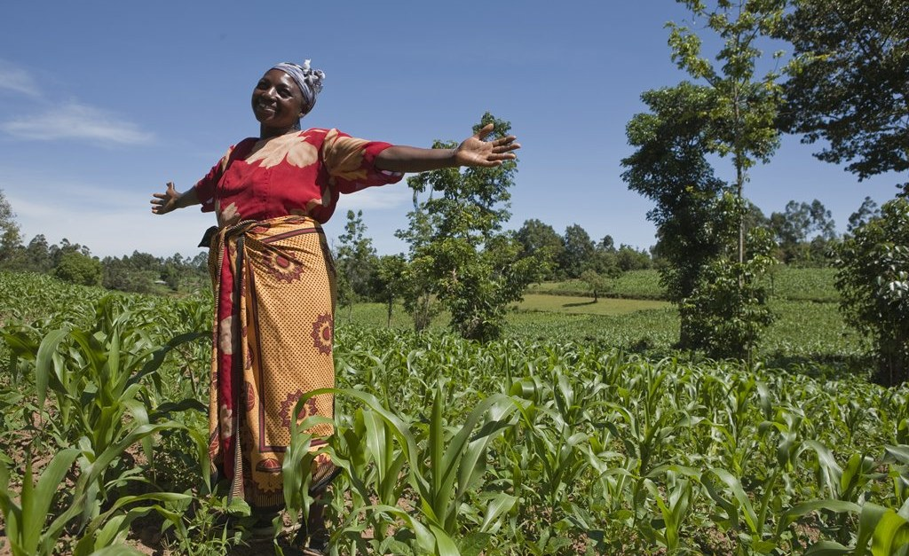
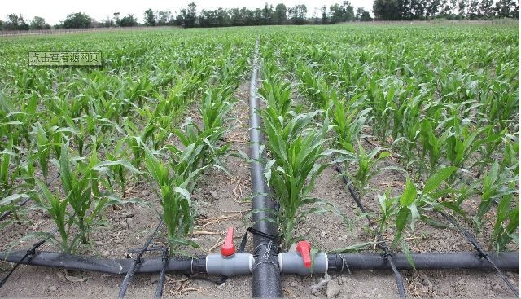
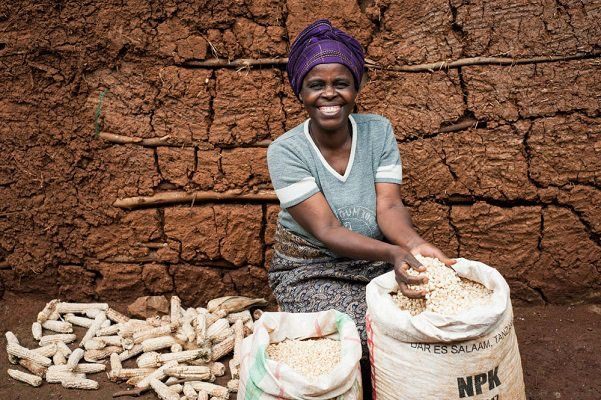
Thandi, a dedicated farmer from Serowe, struggled for years with low maize yields due to erratic weather patterns. Determined to improve, Thandi attended a workshop on modern farming techniques organized by the Agricultural Information Portal in January 2023. She learned about precision agriculture and how to utilize weather data for better crop management. Using the portal's weather updates and precision farming tips, Thandi implemented drip irrigation and adopted a soil health monitoring system in March 2023. She also started rotating her crops to maintain soil fertility. By March 2024, Thandi's maize yields had doubled, providing enough surplus to sell in the local market. Thandi's success story inspired other farmers in Serowe to adopt modern techniques. Her farm became a model for sustainable farming practices, and Thandi now mentors young farmers, helping them achieve similar success.
Learn More
Naledi's Organic Vegetable Garden in Maun
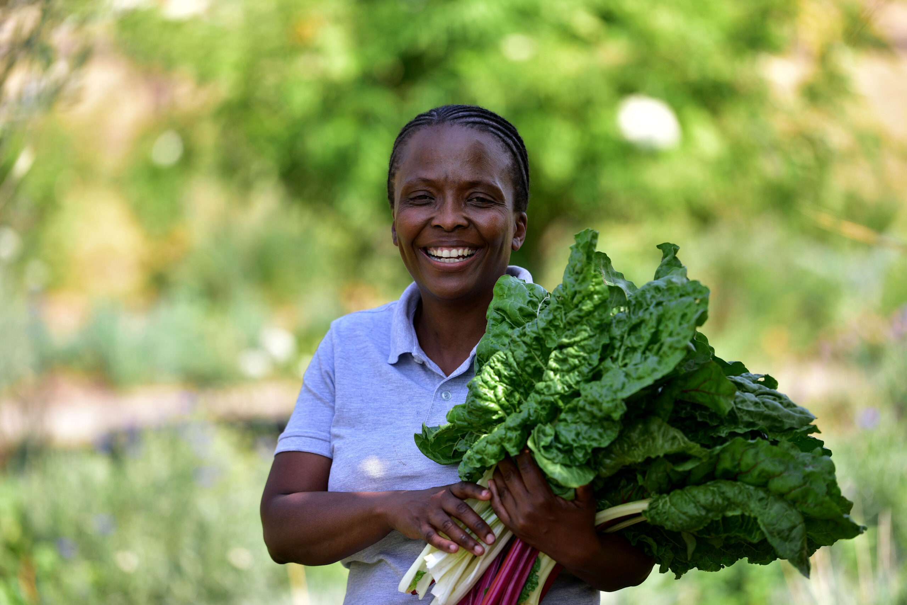
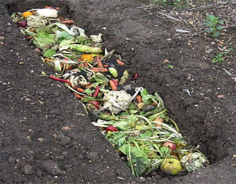
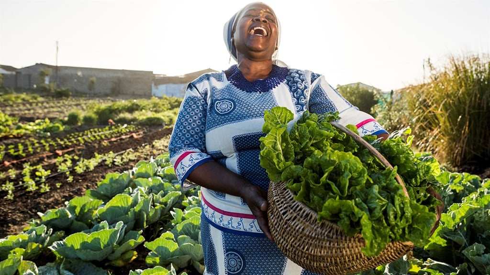
Naledi, a young entrepreneur from Maun, wanted to start an organic vegetable garden. However, she faced challenges with pest management and soil quality. She turned to the Agricultural Information Portal for guidance and found extensive resources on organic farming techniques. With the portal's information, Naledi began composting to enrich her soil and used natural pest repellents. She also planted a variety of vegetables to ensure a continuous harvest throughout the year. The portal's expert chat feature provided her with real-time advice whenever she encountered issues. Naledi's organic garden flourished, and she began supplying fresh vegetables to local restaurants and markets. Her commitment to organic farming not only brought her financial success but also promoted healthy eating in her community. Naledi's story encouraged other farmers in Maun to consider organic practices.
Learn More
Kgosi's Livestock Farm in Ghanzi
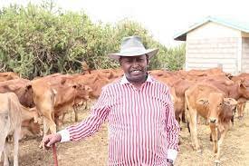

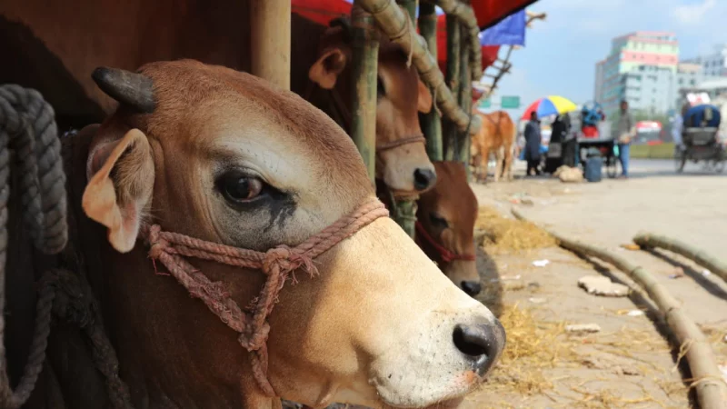
Kgosi, a cattle farmer in Ghanzi, struggled with livestock health and market prices. He discovered the Agricultural Information Portal and started using its resources to improve his farming methods. Kgosi learned about better livestock management practices and how to monitor market trends. Kgosi implemented rotational grazing to maintain pasture quality and used the portal's real-time market information to decide the best times to sell his cattle. He also attended online webinars on livestock health and nutrition. Kgosi's cattle health improved, leading to higher quality meat and better market prices. He increased his income significantly and invested in expanding his farm. Kgosi's success story motivated other livestock farmers in Ghanzi to utilize modern farming techniques and market insights.
Learn More
Dineo's Poultry Farm in Francistown
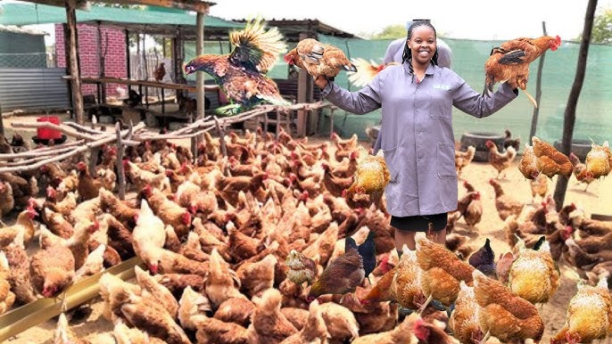
.jpg)

Dineo, an innovative farmer in Francistown, faced challenges with high mortality rates in her poultry due to inconsistent feeding and disease outbreaks. She turned to the Agricultural Information Portal for solutions and discovered the benefits of automated feeding systems and biosecurity measures. Dineo invested in an automated feeding system that ensured her chickens received consistent nutrition. She also implemented strict biosecurity protocols to prevent disease. With these changes, her poultry's health improved significantly, leading to higher egg production and lower mortality rates. Dineo's success in poultry farming has made her a role model in Francistown, and she now conducts workshops to share her knowledge with other poultry farmers.
Learn More
Keabetswe's Dairy Farm in Lobatse
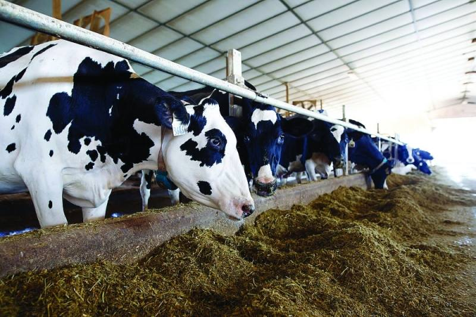
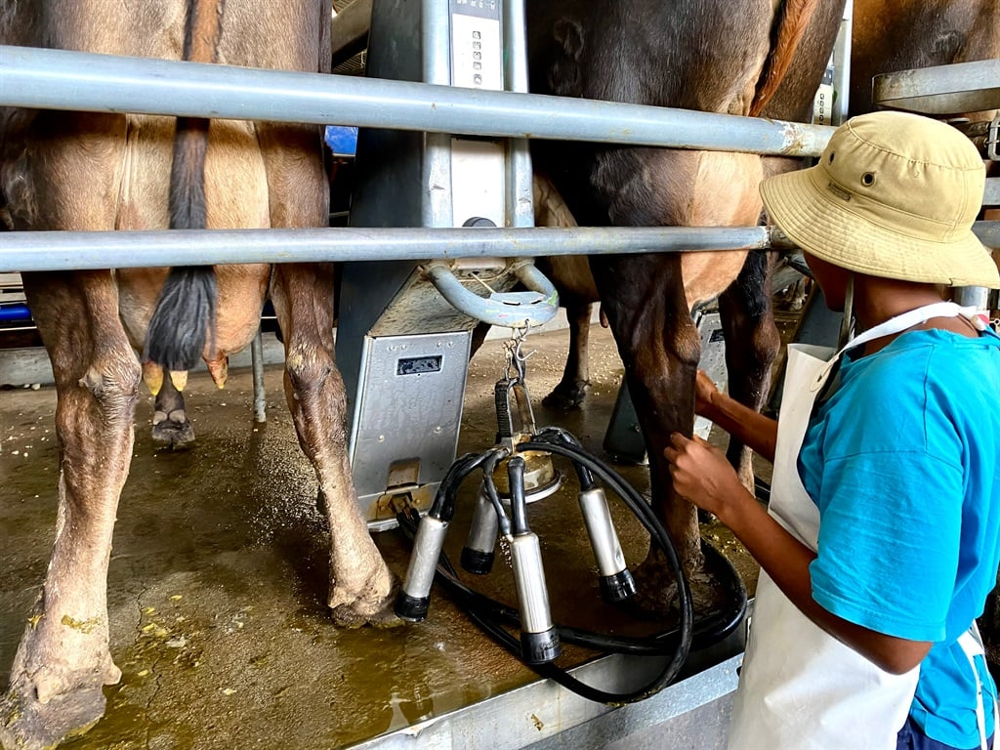
.jpg)
Keabetswe, a dairy farmer in Lobatse, struggled with low milk yields and high production costs. Seeking help, she utilized the Agricultural Information Portal to learn about advanced dairy farming techniques. The portal provided insights into improving cattle nutrition and herd management. Keabetswe implemented a balanced feeding program and invested in a modern milking system. These changes increased her milk production and reduced labor costs. Keabetswe also began producing value-added dairy products like cheese and yogurt, which she sold at local markets. Her dairy farm's transformation has inspired other farmers in Lobatse to adopt better farming practices, leading to a more vibrant local dairy industry.
Learn More
Mpho's Fish Farm in Kasane
.jpg)
.jpg)
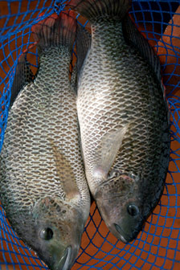
Mpho, a resourceful entrepreneur in Kasane, wanted to start a fish farm to provide fresh fish to her community. She faced challenges with water management and sustainable practices. Using the Agricultural Information Portal, Mpho learned about aquaponics, a system that combines fish farming and hydroponic plant cultivation. She set up an aquaponics system, which allowed her to efficiently use water and grow vegetables alongside fish. This innovative approach not only provided a steady supply of fresh fish but also vegetables for the local market. Mpho's fish farm has become a successful and sustainable business model in Kasane, inspiring others to explore aquaponics and sustainable farming methods.
Learn More